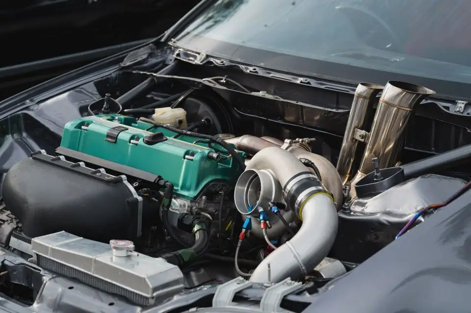
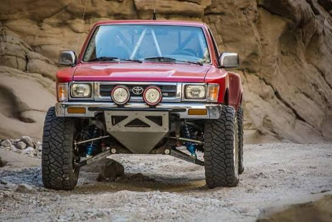
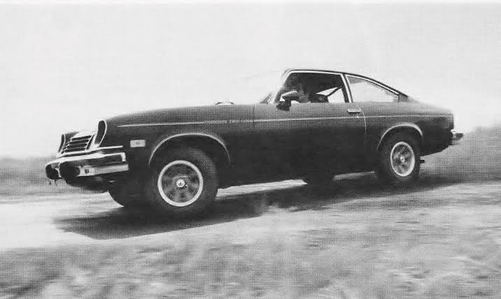

Home
Sneaky Crocodile Customs builds sleepers: cars that look stock from the curb but hide serious performance under the hood. Every build is custom-tailored to the owner, from mild street upgrades to full engine swaps.
Our cars keep a low profile until it's time to strike. We keep the factory badges, the stock-looking wheels, and the everyday paint, then hide the horsepower where only you know it's there.
Why a Sneaky Crocodile?
- Fully custom builds designed around your goals
- Factory-quality fit and finish
- Dyno-tuned and road-tested before delivery
- 12-month warranty on all workmanship

Services
Pick a single upgrade or combine them into a complete package.
Prices below are starting points. Your final quote depends on your car, the parts you choose, and how far you want to go. Every quote is free and comes with a full breakdown, so there are no surprises.
| Service | Includes | Starting At |
|---|---|---|
| Engine Swaps | Sourcing, install, wiring, tuning | $12,000 |
| Forced Induction | Turbo or supercharger kits, fuel upgrades | $6,500 |
| Suspension & Brakes | Coilovers, big brake kits, alignment | $3,000 |
| Custom Interiors | Seats, upholstery, gauges, audio | $2,500 |
| Paint & Wrap | Full respray, vinyl wraps, ceramic coating | $4,000 |

Build Estimator
Check the services you want to see a starting estimate for your build.
Estimated starting total: $0
Builds
A few of our favorite recent projects.
Each of these cars still looks like it just left the dealership lot or a grocery store parking space. Their owners use them every day, and most people who see them have no idea what's under the hood.
The Grocery Getter
A family station wagon with a twin-turbo V8 swap. 650 horsepower.

- Engine: Twin-turbo 5.0L V8
- Power: 650 hp
- 0-60 mph: 3.6 seconds
The Accountant
A beige commuter sedan with an all-wheel-drive conversion, built transmission, and track-ready suspension.

- Engine: Turbocharged 2.5L inline-four
- Power: 420 hp
- 0-60 mph: 3.9 seconds
The Swamp Runner
A lifted pickup with long-travel suspension, a supercharged V8, and our signature crocodile-green interior stitching.

- Engine: Supercharged 6.2L V8
- Power: 700 hp
- 0-60 mph: 4.4 seconds
About
I started Sneaky Crocodile Customs because I always thought some of the coolest cars were the ones that were seemingly normal until you popped the hood. Theres nothing cooler than a regular grocery getter or family vehicle that shreds pavement when no one expects it to. I have a passion for creating unique, high-performance vehicles that turn heads and deliver exceptional driving experiences.
We work closely with every customer, from the first sketch to the final dyno run, so the finished car is exactly what you imagined.

Our Process
- Consultation: Tell us about your car and your goals.
- Design: We plan the build and give you a detailed quote.
- Build: Our team gets to work, with progress updates along the way.
- Tune & Test: Every car is dyno-tuned and road-tested.
- Delivery: You drive away in something sneaky.
Contact
Ready to start your build? Get in touch for a free consultation.
Stop by the shop, give us a call, or send an email with your car's year, make, and model and what you'd like to build. We usually reply within one business day.

Checking shop hours...
Shop: 123 Bayou Road, Charlotte, NC
Phone: (555) 012-3456
Email: builds@sneakycrocodile.example
Hours: Monday through Friday, 8am to 6pm; Saturday, 9am to 2pm